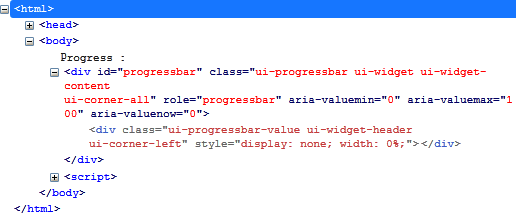
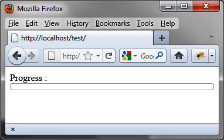

{% include JB/setup %}
{% raw %}
<div>
<div class="book" title="Formatting Content"><div class="book"><div class="book"><div class="book"><h1 class="title2"><a id="formatting_content-id4" class="calibre1"></a>Formatting Content</h1></div></div></div><p class="calibre7"><a class="ulink" href="ch06s02.html#html_code_generated_by_the_progressbar_o" title="Figure 6-2. HTML code generated by the progressbar () method">Figure 6-2</a> shows an
    example of the HTML generated by jQuery UI once modified by the <code class="literal">progressbar ()</code> instruction (this code was
    recovered using the Firebug extension in Firefox).</p><div class="book"><div class="figure"><a id="html_code_generated_by_the_progressbar_o" class="firstname"></a><div class="book"><div class="book"><a id="I_mediaobject6_d1e4635" class="firstname"></a></div></div><p class="title4">Figure 6-2. HTML code generated by the progressbar () method</p></div></div><p class="calibre7">Again, it is possible to use CSS classes of elements to customize
    the display. For <span class="firstname">example,</span> if we change
    the <code class="literal">ui-progressbar</code> CSS class associated
    with <code class="literal">&lt;div&gt;</code> elements, we get a new
    appearance for progress bars, such as that shown in <a class="ulink" href="ch06s02.html#customized_progress_bar" title="Figure 6-3. Customized progress bar">Figure 6-3</a>, with a height of 10 pixels:</p><a id="I_programlisting6_d1e4653" class="firstname"></a><pre class="programlisting">&lt;script src = jquery.js&gt;&lt;/script&gt;
&lt;script src = jqueryui/js/jquery-ui-1.8.16.custom.min.js&gt;&lt;/script&gt;

&lt;link rel=stylesheet type=text/css
      href=jqueryui/css/smoothness/jquery-ui-1.8.16.custom.css /&gt;

<span class="firstname"><strong class="userinput">&lt;style type=text/css&gt;</strong></span>
  <span class="firstname"><strong class="userinput">div#progressbar.ui-progressbar {</strong></span>
    <span class="firstname"><strong class="userinput">height : 10px;</strong></span>
  <span class="firstname"><strong class="userinput">}</strong></span>
<span class="firstname"><strong class="userinput">&lt;/style&gt;</strong></span>

Progress : &lt;div id=progressbar&gt;&lt;/div&gt;

&lt;script&gt;

$("div#progressbar").progressbar ();

&lt;/script&gt;</pre><div class="book"><div class="figure"><a id="customized_progress_bar" class="firstname"></a><div class="book"><div class="book"><a id="I_mediaobject6_d1e4673" class="firstname"></a></div></div><p class="title4">Figure 6-3. Customized progress bar</p></div></div></div></div>

{% endraw %}

